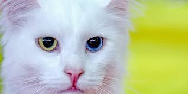

Welcome to se where we've got lots and lots of photos of cats. Buckle your belt as we explore some of the most amazing cat photos that have been recorded
Maine Coon.
Cat history

How Long Have Domesticated Cats Been Around?
Did you know that not even a century ago, few cats lived entirely indoors at all? In fact, for more than 10,000 years, cats have lived outdoor lives, sharing the environment with birds and wildlife. Understanding cats’ place in history and human evolution reveals how very recently domestic cats came indoors and how millions of this species—who we call community cats—continue to live healthy lives outdoors today, as all domestic cats are biologically adapted to do.
Origins of the Domestic Cat
began their unique relationship with humans 10,000 to 12,000 years ago in the Fertile Crescent, the geographic region where some of the earliest developments in human civilization occurred (encompassing modern day parts of West Asia). One such development was agriculture. As people abandoned their nomadic lifestyle and settled permanently to farm the land, stored grain attracted rodents.
Taking advantage of this new, abundant food source, Middle Eastern wildcats, or felix silvestris lybica, preyed on the rodents and decided to stick around these early towns, scavenging the garbage that all human societies inevitably producejust as community cats do today.
Over thousands of years, a new species of cat eventually evolved that naturally made its home around people: felis catus. Pet, stray, and feral cats (stray and feral cats are community cats) are all this same species, which we call the domestic cat.1
Cats Travel the World
Cats formed a mutually beneficial relationship with people, and some scientists argue that cats domesticated themselves.2 Especially prized as mousers on ships, cats traveled with people around the globe:
A burial site in Cyprus provides the first archaeological evidence of humans and cats living side-by-side, as far back as 9,500 years ago. Cats must have been brought to the island intentionally by humans.3
In ancient Egypt, cats were worshipped, mummified, and sometimes even dressed in golden jewelry to indicate the status of their owners.
In 31 BC, Egypt became a province of the Roman Empire. Cats were introduced into Roman life, becoming truly widespread in Europe around the 4th century AD.4 A cat skeleton from this period shows the shortened skull of domestic cats today.5
Geoffrey Chaucer mentioned a cat door in The Canterbury Tales in the 1380s.
From Europe, cats boarded ships to the Americas, reportedly tagging along with Christopher Columbus, with the settlers at Jamestown, and aboard the Mayflower.
Cats continued their service as mousers throughout history, even serving as official employees of the United States Postal Service as late as 19th and early 20th century America.6
Towards the end of the 19th century, more Americans began to keep cats for their company as well as their utility. The first cat show was held at Madison Square Garden in 1895. By the end of World War I, cats were commonly accepted as house pets in the U.S.
Throughout all this time, cats were allowed to come and go freely from human householdseven President Calvin Coolidge’s cat had free rein to wander to and from the White House during the 1920s. As Sam Stall, author of 100 Cats Who Changed Civilization and The Cat Owner’s Manual, writes, “Back in Coolidge’s day no one thought of confining cats indoorsnot even one belonging to the president of the United States.”7
Photos
